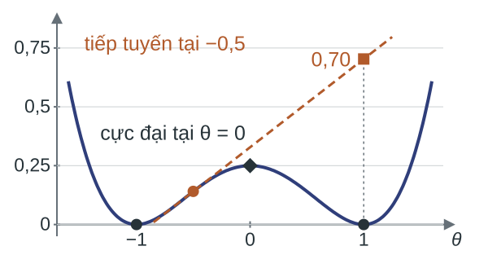
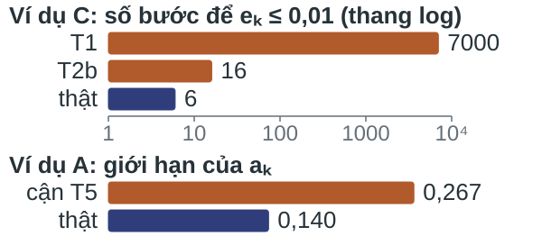

Vấn đề trung tâm và nội dung bài
Vấn đề trung tâm. Với phép lặp ${x_{k+1}=x_k-\eta_kg_k},$ xác định kèm chứng minh: dãy hội tụ theo nghĩa nào, nhanh đến đâu, dưới giả thiết nào, với bước nào.
$g_k$ là $\nabla f(x_k)$ trong phương pháp hạ gradient (GD), một dưới gradient (subgradient) khi $f$ lồi nhưng không khả vi, hoặc gradient trên một nhóm mẫu (Bài 05) trong hạ gradient ngẫu nhiên (SGD).
- Các dạng hội tụ của một dãy lặp
- Bất đẳng thức cầu nối giữa các dạng hội tụ
- Hội tụ của hạ gradient
- Dưới gradient và trung bình lặp
- Hạ gradient ngẫu nhiên cho hàm lồi và lồi mạnh
- Mục tiêu không lồi và chuẩn gradient
- Bảng tra và giới hạn
Luận đề. Mọi chứng minh hội tụ trong bài dùng một khuôn: lập bất đẳng thức giữa $x_k$ và $x_{k+1},$ nối các bất đẳng thức đó qua mọi bước, rồi chọn $\eta_k.$ Giả thiết quyết định bất đẳng thức đó và cách nối.
Thước đo tiến triển của dãy lặp
Với nghiệm $x^*$ và $f^*=f(x^*)\text{:}$ sai số giá trị ${e_k=f(x_k)-f^*},$ khoảng cách ${d_k=\lVert x_k-x^*\rVert}.$
Ví dụ C. $f(x)=\tfrac12(3x_1^2+7x_2^2),$ ${x^*=0},$ ${f^*=0};$ GD bước $\tfrac17$ từ ${x_0=(2,4)}.$

Ví dụ A. ${J(\theta)=\tfrac16\sum_i(\theta-y_i)^2},$ ${y=(-1,1,3)},$ $\theta^*=1;$ SGD bước $0{,}1,$ mỗi bước một mẫu, $\theta_0=0.$

Ví dụ C: $e_k,$ $d_k^2$ giảm theo tỉ số $\tfrac{16}{49}$ từ $k=1,$ cận $O(1/k)$ của Bài 04 chỉ giảm như $70/k.$ Ví dụ A: ${\mathbb E(\theta_k-1)^2}$ giảm về $0{,}140.$ Một khẳng định hội tụ phải nêu đại lượng được đo và kiểu giảm.
Dạng hội tụ và tốc độ hội tụ

Trên thang logarit, dãy dạng $Cq^k$ là đường thẳng; $C/k$ và $C/\sqrt k$ cong và phẳng dần.
Định nghĩa (dạng hội tụ). Cho $f$ có điểm cực tiểu $x^*,$ $f^*=f(x^*).$ Dãy lặp $(x_k)$ hội tụ
- theo dãy lặp nếu ${d_k=\lVert x_k-x^*\rVert\to0};$
- theo giá trị nếu ${e_k=f(x_k)-f^*\to0};$
- tới điểm dừng nếu $\lVert\nabla f(x_k)\rVert\to0;$
- theo kỳ vọng nếu $x_k$ ngẫu nhiên và $\mathbb E$ của $d_k,$ $e_k,$ $\lVert\nabla f(x_k)\rVert$ hay bình phương $\to0.$
Định nghĩa (tốc độ). Dãy $u_k\ge0$ hội tụ tuyến tính (linear convergence) với hệ số $q\in(0,1)$ nếu có $C>0$ để $u_k\le Cq^k$ với mọi $k;$ hội tụ với tốc độ $O(1/k^p)$ (dưới tuyến tính, sublinear), $p>0,$ nếu có $C>0$ để $u_k\le C/k^p$ với mọi $k\ge1.$
Ký hiệu và giả thiết
| Ký hiệu | Nghĩa |
|---|---|
| $x_k,$ $\eta_k,$ $g_k$ | điểm lặp, bước, vectơ cập nhật |
| $x^*,$ $f^*$ | điểm cực tiểu, giá trị tối ưu $f(x^*)$ |
| $e_k,$ $d_k$ | $f(x_k)-f^*,$ $\lVert x_k-x^*\rVert$ |
| $D$ | $\lVert x_0-x^*\rVert$ |
| $K$ | số bước |
| $L,$ $\mu,$ $\kappa$ | hằng số của H2, H3; $\kappa=L/\mu$ |
- H0. $f$ khả vi trên $\mathbb R^n$ và bị chặn dưới.
- H1 (lồi). $f(y)\ge f(x)+\nabla f(x)^T(y-x).$
- H2 ($L$-trơn, $L$-smooth).
$\lVert\nabla f(x)-\nabla f(y)\rVert\le L\lVert x-y\rVert.$ - H3 ($\mu$-lồi mạnh), $\mu>0.$$$\begin{aligned}f(y)\ge{}&f(x)+\nabla f(x)^T(y-x)\\&+\tfrac\mu2\lVert y-x\rVert^2.\end{aligned}$$
- H4. $f$ đạt giá trị nhỏ nhất tại một điểm $x^*.$
Trong H1–H3, $f$ khả vi và bất đẳng thức đúng với mọi $x,y\in\mathbb R^n;$ chuẩn Euclid. H5–H7 được nêu ở phần D, E, F.
Hội tụ giá trị và hội tụ dãy lặp

Ví dụ (mất mát logistic). ${\phi(s)=\log(1+e^{-s})}$ lồi, $0<\phi''(s)\le\tfrac14$ nên $L=\tfrac14.$ GD bước $1/L=4$ từ $s_0=0\text{:}$ $\phi(s_k)\to0$ trong khi $s_k\to\infty.$
Ký hiệu. $f_{\inf}=\inf_xf(x)$ là cận dưới đúng (infimum) của $f;$ với $\phi,$ ${\phi_{\inf}=\inf_s\phi(s)=0}$ không đạt.
Ví dụ (nghiệm không duy nhất). $f(x)=x_1^2$ trên $\mathbb R^2\text{:}$ mọi điểm $(0,c)$ là nghiệm, nên “$x_k\to x^*$” phụ thuộc cách chọn $x^*.$
Nối $e_k$ với $d_k$ cần nghiệm tồn tại (H4); độ cong chặn trên (H2) cho cận của $e_k$ theo $d_k,$ chặn dưới $\mu>0$ (H3) đủ cho chiều ngược lại và kéo theo nghiệm duy nhất.
Cận trên bậc hai

Lát cắt $h(t)=2{,}5t^2$ của Ví dụ C, ${f(x)=\tfrac12(3x_1^2+7x_2^2)},$ theo hướng $(1,1)/\sqrt2$ nằm dưới parabol độ cong $L=7$ tiếp xúc tại ${t=1};$ parabol dưới, $\mu=3,$ ứng với H3.
Bổ đề BĐ1 (cận trên bậc hai). Giả sử $f$ khả vi và thỏa H2. Với mọi $x,y\in\mathbb R^n,$
Chứng minh. Đặt $u=y-x;$ tích phân dọc đoạn $[x,y],$ rồi dùng Cauchy–Schwarz và H2:
Bổ đề giảm và cận chuẩn gradient
Thế ${y=x-\eta\nabla f(x)}$ vào BĐ1 được bổ đề giảm; lấy $\eta=1/L$ và dùng $f_{\inf}\le f(y)$ được BĐ2.
Bổ đề giảm (descent lemma). Giả sử H2, $\eta>0.$ Với mọi $x,$
Bổ đề BĐ2 (chặn chuẩn gradient). Giả sử H0, H2. Với mọi $x\text{:}$ ${\lVert\nabla f(x)\rVert^2\le2L\bigl(f(x)-f_{\inf}\bigr)},$ vì với ${\eta=1/L}\text{:}$
Ví dụ C ($f(x)=\tfrac12(3x_1^2+7x_2^2),$ $L=7$) tại $x_0=(2,4)\text{:}$ $f(x_0)=62,$ $f_{\inf}=0,$ ${\lVert\nabla f(x_0)\rVert^2=820}\le{2\cdot7\cdot62=868};$ bước $\tfrac17$ cho ${f(x_1)\le62-\tfrac{820}{14}=\tfrac{24}7},$ thực tế $f(x_1)=\tfrac{96}{49}.$
Cận của hàm lồi mạnh
BĐ1 (tại $x^*$) chặn $e$ theo $d,$ BĐ2 chặn $\lVert\nabla f\rVert$ theo $e;$ thêm H3 cho các chiều ngược lại.
Bổ đề BĐ3 (cận của hàm lồi mạnh). Giả sử H3, H4. Khi đó $x^*$ là điểm cực tiểu duy nhất, và với mọi $x,$ đặt ${d=\lVert x-x^*\rVert},$ ${e=f(x)-f^*}\text{:}$
Chứng minh.
- H3 với $x^*$ ở vị trí của $x$ và $y=x,$ nơi $\nabla f(x^*)=0\text{:}$ ${f(x)\ge f^*+\tfrac\mu2d^2};$ với $x$ là một điểm cực tiểu khác, $e=0$ nên $d=0.$
- Cực tiểu vế phải của H3 theo $y\text{:}$ ${f^*\ge f(x)-\tfrac1{2\mu}\lVert\nabla f(x)\rVert^2}.$
- H3 tại $x$ với $y=x^*,$ Cauchy–Schwarz và ${f^*\le f(x)}\text{:}$ ${0\ge-\lVert\nabla f(x)\rVert d+\tfrac\mu2d^2}.$
Ví dụ C ($f(x)=\tfrac12(3x_1^2+7x_2^2),$ $\mu=3$) tại $x_0=(2,4)\text{:}$ ${d^2=20},$ ${e=62},$ ${\lVert\nabla f(x_0)\rVert^2=820};$ ${30\le62\le\tfrac{820}6\approx136{,}7};$ ${d\approx4{,}47\le\tfrac23\sqrt{820}\approx19{,}1}.$
Đồng nhất thức một bước

Ví dụ C, ${f(x)=\tfrac12(3x_1^2+7x_2^2)},$ $x^*=0\text{:}$ một bước $\eta=\tfrac17$ từ $x=(2,4)$ với ${g=\nabla f(x)=(6,28)};$ ${g^T(x-x^*)=124}\ge{62=f(x)-f^*}.$
Bổ đề BĐ4 (đồng nhất thức một bước). Với mọi $x,g\in\mathbb R^n,$ $\eta>0\text{:}$
Hệ quả của H1. Với H1, H4: ${\nabla f(x)^T(x-x^*)\ge f(x)-f^*}.$
Nhận xét (ý nghĩa hình học). Khi $g^T(x-x^*)>0,$ bước $-\eta g$ có thành phần hướng về $x^*,$ và khoảng cách giảm khi ${0<\eta<2g^T(x-x^*)/\lVert g\rVert^2}.$
Bản đồ các dạng hội tụ

Dưới H2, H3, H4, ba đại lượng chặn lẫn nhau, sai khác hằng số:
Thiếu giả thiết thì có phản ví dụ:
- ${\phi(s)=\log(1+e^{-s})},$ GD bước $4\text{:}$ $\phi(s_k)\to0,$ $s_k\to\infty$ (thiếu H4);
- $f(x)=x_1^2$ trên $\mathbb R^2\text{:}$ mọi $(0,c)$ là nghiệm (thiếu H3);
- $f(x)=x^4,$ $x^*=0,$ tại ${x=0{,}1}\text{:}$ ${\lvert f'(x)\rvert=0{,}004},$ ${d=0{,}1}$ (thiếu H3).
Bất đẳng thức cầu nối trên hai ví dụ
Câu hỏi:
- Kiểm BĐ2 cho ${\phi(s)=\log(1+e^{-s})}$ (với $L=\tfrac14$) tại $s=0;$ giải thích vì sao bổ đề dùng $f_{\inf}$ thay cho $f^*.$
- Tính $\mu,$ $L$ cho ${J(\theta)=\tfrac12(\theta-1)^2+\tfrac43}$ (Ví dụ A) và ${f(x)=\tfrac12(3x_1^2+7x_2^2)}$ (Ví dụ C); với $f,$ kiểm chuỗi $(\ast)$ tại ${x=(1,-1)}.$
- Phân loại bốn phát biểu (a)–(d) theo dạng hội tụ, rồi nêu giả thiết để suy ra một dạng khác.
Với $x_k$ là GD bước $\tfrac17$ trên Ví dụ C: (a) ${f(x_k)-f^*\le70/k};$ (b) ${\lVert x_k-x^*\rVert^2\le20(4/7)^k};$
(c) ${\min_{k<K}\lVert\nabla f(x_k)\rVert^2\le C/K}$ với hằng số $C>0;$
(d) ${\mathbb E(\theta_k-1)^2\le0{,}9^k+0{,}267},$ với $\theta_k$ là SGD trên Ví dụ A.
Bảo đảm cho hạ gradient bước cố định
Ví dụ C, ${f(x)=\tfrac12(3x_1^2+7x_2^2)},$ GD bước $\tfrac17$ từ $(2,4)\text{:}$ $e_k=6(16/49)^k$ nhỏ hơn nhiều so với cận $70/k$ của định lý $O(1/k)$ ở Bài 04.
Phần này xét ${x_{k+1}=x_k-\tfrac1L\nabla f(x_k)}$ dưới H1, H2, H4 ($f$ đạt giá trị nhỏ nhất tại $x^*$), rồi thêm H3.
Ba khoảng trống của định lý $O(1/k)\text{:}$
- chưa phát biểu tính không tăng của $d_k$ như một kết luận;
- chưa phát biểu cho bước cố định ${0<\eta\le1/L};$ chứng minh trên trang chiếu Bài 04 chỉ nêu ý chính;
- chưa xét trường hợp thiếu H4: với ${\phi(s)=\log(1+e^{-s})},$ $e_k\to0$ mà $s_k\to\infty,$ và $D$ không xác định.
Khuôn một bước: tổng lồng và co
Bất đẳng thức một bước liên hệ $u_k\ge0$ tại hai bước liên tiếp; khuôn một bước nối chúng qua mọi bước theo hai mẫu.

Các hiệu $u_j-u_{j+1}$ của một dãy giảm $u_k\ge0$ cùng $u_4$ xếp thành cột cao $u_0,$ nên tổng các hiệu là ${u_0-u_4\le u_0}.$
Mẫu 1 (tổng lồng, telescoping sum). Nếu $u_k\ge0,$ $c>0$ và $p_{k+1}\le c\,(u_k-u_{k+1})$ với mọi $k$ thì
Mẫu 2 (co). Nếu $u_{k+1}\le q\,u_k$ với $0\le q<1$ thì $u_k\le q^ku_0.$
Nhận xét. Đại lượng không âm $u_k$ được chặn từ bước này sang bước sau gọi là hàm thế (potential function).
Định lý hội tụ dưới tuyến tính của hạ gradient
So với định lý $O(1/k)$ của Bài 04 (bước $1/L$ hoặc quay lui), phát biểu dưới đây cho bước hằng bất kỳ $0<\eta\le1/L$ và thêm kết luận $d_{k+1}\le d_k.$
Định lý (T1'). Đầu vào: $f$ thỏa H1, H2, H4; điểm đầu $x_0\in\mathbb R^n,$ $D=\lVert x_0-x^*\rVert.$
Bước: $x_{k+1}=x_k-\eta\nabla f(x_k)$ với bước hằng $0<\eta\le1/L.$
Kết luận: $d_{k+1}\le d_k$ với mọi $k\ge0,$ và với mọi $k\ge1\text{:}$
Trường hợp $\eta=1/L$ (T1): ${e_k\le\dfrac{LD^2}{2k}}.$
Chứng minh định lý dưới tuyến tính
Ý tưởng: dùng BĐ4 đưa $e_{k+1}$ về hiệu $d_k^2-d_{k+1}^2$ rồi áp mẫu 1. Viết $g_k=\nabla f(x_k),$ $0<\eta\le1/L.$
- Bổ đề giảm (H2, $\eta\le1/L$): $\;f(x_{k+1})\le f(x_k)-\tfrac\eta2\lVert g_k\rVert^2.$
- Hệ quả của H1, dùng H4 (cần $x^*,$ $f^*$): $\;f(x_k)\le f^*+g_k^T(x_k-x^*).$
- BĐ4 với bước $\eta,$ chia cho $2\eta\text{:}$ $\;g_k^T(x_k-x^*)-\tfrac\eta2\lVert g_k\rVert^2=\tfrac1{2\eta}\bigl(d_k^2-d_{k+1}^2\bigr).$
- Cộng 1 và 2, thay 3: $\;e_{k+1}\le\tfrac1{2\eta}\bigl(d_k^2-d_{k+1}^2\bigr);$ vì $e_{k+1}\ge0$ nên $d_{k+1}\le d_k.$
- Mẫu 1, $e_j$ không tăng (bước 1): $\;k\,e_k\le\sum_{j=1}^ke_j\le\tfrac1{2\eta}\bigl(d_0^2-d_k^2\bigr)\le\tfrac{D^2}{2\eta}.$
- Chia cho $k\text{:}$ $\;e_k\le\tfrac{D^2}{2\eta k}$ (T1'); với $\eta=1/L\text{:}$ $\;e_k\le\tfrac{LD^2}{2k}$ (T1).
Định lý hội tụ tuyến tính của hạ gradient
T1' đúng cả cho $f(x)=x_1^2$ trên $\mathbb R^2$ ($L=2,$ mọi $(0,c)$ là nghiệm); vì $x_1^2$ không có $\mu>0,$ cận của T1' không thể dùng $\mu.$ Thêm H3 làm bất đẳng thức một bước thành phép co.
Định lý (T2a, T2b). Đầu vào: $f$ thỏa H2, H3, H4 với ${0<\mu\le L};$ điểm đầu $x_0,$ ${D=\lVert x_0-x^*\rVert},$ ${e_0=f(x_0)-f^*}.$
Bước: $x_{k+1}=x_k-\tfrac1L\nabla f(x_k).$
Kết luận: với mọi $k\ge0$ và $\kappa=L/\mu,$
Hệ số $q=1-\tfrac1\kappa\in[0,1).$ Với $\mu<L,$ $d_k^2$ và $e_k$ hội tụ tuyến tính hệ số $q;$ với $\mu=L$ ($q=0$), một bước đã tới nghiệm.
Chứng minh định lý tuyến tính
Ý tưởng: thay cận tuyến tính của H1 bằng cận bậc hai của H3, để bất đẳng thức một bước thành phép co (mẫu 2). Viết $g_k=\nabla f(x_k),$ bước $\eta=\tfrac1L.$
T2a (mẫu 2 với $u_k=d_k^2$):
- BĐ4 với $\eta=\tfrac1L\text{:}$ $\;d_{k+1}^2=d_k^2-\tfrac2L\,g_k^T(x_k-x^*)+\tfrac1{L^2}\lVert g_k\rVert^2.$
- H3 tại $x_k$ với $y=x^*$ (cần H4): $\;g_k^T(x_k-x^*)\ge e_k+\tfrac\mu2d_k^2.$
- BĐ2 với $f_{\inf}=f^*\text{:}$ $\;\lVert g_k\rVert^2\le2L\,e_k.$
- Thế 2, 3 vào 1: $\;d_{k+1}^2\le d_k^2-\tfrac2L\bigl(e_k+\tfrac\mu2d_k^2\bigr)+\tfrac2Le_k=\bigl(1-\tfrac\mu L\bigr)d_k^2.$
T2b (mẫu 2 với $u_k=e_k$): bổ đề giảm với $\eta=\tfrac1L$ và BĐ3, $\lVert g_k\rVert^2\ge2\mu e_k,$ cho
Mẫu 2 cho ${d_k^2\le(1-\tfrac\mu L)^kD^2}$ và ${e_k\le(1-\tfrac\mu L)^ke_0};$ mẫu 2 cần ${q=1-\tfrac\mu L\ge0},$ đúng vì $\mu\le L.$
Ba cận trên ví dụ bậc hai (Ví dụ C)
Ví dụ C: ${f(x)=\tfrac12(3x_1^2+7x_2^2)},$ $L=7,$ $\mu=3,$ $x_0=(2,4),$ $D^2=20,$ $e_0=62;$ GD bước $\tfrac17.$ Bảng: số bước để đại lượng $\le0{,}01.$

| Đại lượng | Số bước |
|---|---|
| T1: $e_k\le70/k$ | $7000$ |
| T2b: $e_k\le62(\frac47)^k$ | $16$ |
| T2a: $d_k^2\le20(\frac47)^k$ | $14$ |
| Thật: $e_k,$ $d_k^2$ (cùng tỉ số $\frac{16}{49}$) | $6$ |
Cận $O(1/k)$ bỏ qua $\mu=3;$ cận tuyến tính đúng dạng nhưng hệ số co $\tfrac47$ chậm hơn hệ số thật ${\tfrac{16}{49}=(\tfrac47)^2}.$ Một cận bảo đảm cho cả lớp hàm nên có thể bi quan trên một hàm cụ thể.
Hội tụ tuyến tính với bước quay lui
T1' (bước $\eta\le1/L$) và T2 (bước $1/L$) đều cần biết $L;$ quay lui chọn bước mà không cần $L.$
Định lý (T2', chỉ phát biểu). Đầu vào: $f$ thỏa H2, H3 trên tập mức $\{x: f(x)\le f(x_0)\};$ hằng số ${0<\alpha<\tfrac12},$ ${0<\beta<1}.$
Bước: $x_{k+1}=x_k-t_k\nabla f(x_k),$ với $t_k$ là số đầu tiên trong $1,\beta,\beta^2,\dots$ thỏa điều kiện Armijo $f(x_k-t\nabla f(x_k))\le f(x_k)-\alpha t\lVert\nabla f(x_k)\rVert^2.$
Kết luận: $e_k\le c^ke_0,$ với
Giới hạn. T1', T2, T2' đều cần H2. Mất mát bản lề (hinge loss) $\max\{0,1-ys\}$ và trị tuyệt đối $\lvert s\rvert$ có điểm gãy, không có hằng số $L$ hữu hạn.
Quay lui, co và ngưỡng bước
Ví dụ C: ${f(x)=\tfrac12(3x_1^2+7x_2^2)},$ $x_0=(2,4),$ $\mu=3,$ $L=7,$ $D^2=20,$ $e_0=62;$ $[x]_2$ là tọa độ thứ hai của $x.$
Câu hỏi:
- Với quay lui $\alpha=\tfrac14,$ $\beta=\tfrac12\text{:}$ tính hệ số $c$ của T2' và số bước để cận bảo đảm $e_k\le0{,}01.$
- Với GD bước $\tfrac17,$ kiểm cận T2a tại $k=2$ và $k=3.$
- Với GD bước hằng $\eta=0{,}3$ từ cùng $x_0\text{:}$ chứng minh $\lvert[x_k]_2\rvert$ tăng theo $k;$ chỉ ra giả thiết về bước của T1' bị vi phạm.
Mục tiêu không khả vi
Mất mát trị tuyệt đối và mất mát bản lề có điểm gãy: $f$ không khả vi tại đó và không có hằng số $L,$ nên bổ đề giảm và T1', T2, T2' không dùng được.

Ví dụ B (trị tuyệt đối trên ba quan sát $-1,1,3,$ cùng dữ liệu với Ví dụ A).
- $f$ lồi (tổng các hàm lồi); nghiệm là trung vị ${x^*=1},$ ${f^*=\tfrac43}.$
- Điểm gãy tại $-1,1,3;$ độ dốc lần lượt $-1,-\tfrac13,\tfrac13,1$ trên bốn khoảng.
Còn dùng được: BĐ4 (đúng với mọi vectơ $g$) và hệ quả của H1, nếu có một vectơ thay vai trò gradient.
Dưới gradient

Trực quan. Ví dụ B, ${f(x)=\tfrac13\sum_i\lvert x-y_i\rvert},$ ${y=(-1,1,3)}\text{:}$ tại điểm gãy $x=1,$ mọi đường ${\tfrac43+s(x-1)}$ với $s\in[-\tfrac13,\tfrac13]$ nằm dưới đồ thị; độ dốc $s$ thay vai trò gradient.
Định nghĩa. Cho $f:\mathbb R^n\to\mathbb R$ lồi. Vectơ $g\in\mathbb R^n$ là một dưới gradient (subgradient) của $f$ tại $x$ nếu
Tập các dưới gradient là dưới vi phân (subdifferential) $\partial f(x);$ tại điểm khả vi, ${\partial f(x)=\{\nabla f(x)\}}.$ Ví dụ B: ${\partial f(1)=[-\tfrac13,\tfrac13]}.$
H1 dạng dưới gradient. $f$ lồi trên $\mathbb R^n;$ khi đó $\partial f(x)\neq\emptyset$ và, cùng H4, mọi $g\in\partial f(x)$ thỏa ${g^T(x-x^*)\ge f(x)-f^*}.$
Phương pháp dưới gradient
Thuật toán. Đầu vào: $x_0,$ bước $\eta_k>0,$ số bước $K.$
Bước: với $k<K,$ chọn $g_k\in\partial f(x_k),$ đặt $x_{k+1}=x_k-\eta_kg_k.$
Đầu ra: lặp tốt nhất (best iterate) $x_{k^\star},$ $k^\star\in\arg\min_{k<K}f(x_k),$ hoặc trung bình lặp (iterate averaging) $\bar x_K.$

Ví dụ B, ${f(x)=\tfrac13\sum_i\lvert x-y_i\rvert},$ ${y=(-1,1,3)};$ $x_0=0,$ $\eta=4{,}5\text{:}$ $x_k=0;\,1{,}5;\,0;\,1{,}5.$
Ở bước thứ hai $f$ tăng từ $1{,}5$ lên $\tfrac53;$ $-g_k$ không nhất thiết là hướng giảm.
Trung bình lặp (trọng số theo bước) ${\bar x_K=\sum_{k<K}\eta_kx_k\big/\sum_{k<K}\eta_k};$ với bước hằng là trung bình đều: $\bar x_4=0{,}75,$ sai số $\tfrac1{12},$ nhỏ hơn sai số của mọi điểm lặp (nhỏ nhất là $\tfrac16$).
Định lý hội tụ của phương pháp dưới gradient
Vì $f(x_k)$ có thể tăng, cận đặt cho lặp tốt nhất và cho trung bình lặp $\bar x_K$ (trọng số theo bước).
Định lý (T3). Đầu vào: $f$ lồi (H1 dạng dưới gradient), đạt giá trị nhỏ nhất tại $x^*$ (H4); điểm đầu $x_0,$ $D=\lVert x_0-x^*\rVert;$ dưới gradient tại các điểm lặp thỏa H5 (chặn chuẩn của dưới gradient): ${\lVert g_k\rVert\le G}$ với mọi $k.$
Bước: $x_{k+1}=x_k-\eta_kg_k,$ $g_k\in\partial f(x_k),$ bước $\eta_k>0$ cho trước, $K\ge1$ bước.
Kết luận:
Ví dụ B, $f(x)=\tfrac13\sum_i\lvert x-y_i\rvert\text{:}$ mọi dưới gradient có trị tuyệt đối $\le\tfrac13(1+1+1)=1,$ nên ${G=1}.$
Chứng minh định lý dưới gradient
Ý tưởng: BĐ4, hệ quả của H1 và H5 cho bất đẳng thức một bước cho $d_k^2;$ cộng có trọng số $\eta_k$ (tổng lồng như mẫu 1, thêm số hạng nhiễu $\eta_k^2G^2$); Jensen cho $\bar x_K.$
Bổ đề BĐ5 (Jensen hữu hạn). $f$ lồi, $\lambda_k\ge0,$ $\sum_{k<K}\lambda_k=1\text{:}$ ${f\bigl(\sum\lambda_kx_k\bigr)\le\sum\lambda_kf(x_k)}.$
- BĐ4 với $g_k,$ $\eta_k\text{:}$ $\;d_{k+1}^2=d_k^2-2\eta_k\,g_k^T(x_k-x^*)+\eta_k^2\lVert g_k\rVert^2.$
- Hệ quả của H1 ($g_k^T(x_k-x^*)\ge e_k,$ cần H4) và H5: $\;d_{k+1}^2\le d_k^2-2\eta_ke_k+\eta_k^2G^2.$
- Cộng với $k<K,$ dùng $d_K^2\ge0\text{:}$ $\;2\sum_{k<K}\eta_ke_k\le D^2+G^2\sum_{k<K}\eta_k^2.$
- Lặp tốt nhất: $\;\bigl(\sum_{k<K}\eta_k\bigr)\min_{k<K}e_k\le\sum_{k<K}\eta_ke_k.$
- Trung bình lặp, BĐ5 với $\lambda_k=\eta_k/\sum_j\eta_j\text{:}$ $\;f(\bar x_K)-f^*\le\sum_k\lambda_ke_k.$
- Chia bước 3 cho $2\sum_{k<K}\eta_k$ được cả hai kết luận.
Không có bổ đề giảm nên không bảo đảm $e_k$ đơn điệu, và số hạng $\eta_k^2G^2$ không triệt tiêu; kết luận đặt cho $\min_ke_k$ và $\bar x_K.$
Chọn bước cho phương pháp dưới gradient
Trong cận của T3, phần $\tfrac{D^2}{2\sum\eta_k}$ nhỏ khi tổng bước lớn, còn phần $\tfrac{G^2\sum\eta_k^2}{2\sum\eta_k}$ nhỏ khi bước nhỏ.
Hệ quả 1 (bước hằng theo $K$). Bước $\eta=\tfrac{D}{G\sqrt K}$ trong $K$ bước cực tiểu ${\tfrac{D^2}{2K\eta}+\tfrac{G^2\eta}2}$ và cho cận ${\tfrac{DG}{\sqrt K}}.$
Hệ quả 2 (bước giảm dần). Nếu $\eta_k\to0$ và $\sum_k\eta_k=\infty$ thì cận của T3 tiến về $0;$ điều kiện Robbins–Monro ($\sum\eta_k=\infty,$ $\sum\eta_k^2<\infty,$ ví dụ $\tfrac c{k+1}$) là đủ.
Ví dụ B, ${f(x)=\tfrac13\sum_i\lvert x-y_i\rvert},$ ${y=(-1,1,3)};$ ${x_0=0},$ ${D=G=1},$ ${K=4},$ ${\eta=\tfrac D{G\sqrt K}=\tfrac12}\text{:}$ ${x_k=0,\tfrac16,\tfrac13,\tfrac12}.$
| Đầu ra | Sai số $e$ |
|---|---|
| lặp tốt nhất $x_3=\tfrac12$ | $\tfrac16$ |
| trung bình lặp $\bar x_4=\tfrac14$ | $\tfrac14$ |
| cận T3 | $0{,}5$ |
Phương pháp dưới gradient trên ví dụ trị tuyệt đối
Ví dụ B: ${f(x)=\tfrac13\sum_i\lvert x-y_i\rvert},$ ${y=(-1,1,3)},$ $x^*=1,$ $f^*=\tfrac43,$ $G=1.$
Câu hỏi:
- Từ $x_0=2{,}5,$ bước $\eta=2,$ $K=4\text{:}$ tính $x_0,\dots,x_3,$ lặp tốt nhất và $\bar x_4;$ so với cận T3.
- Với $\eta_k=\tfrac c{\sqrt{k+1}},$ dùng ${\sum_{k<K}\tfrac1{k+1}\le1+\ln K}$ để suy ra cận T3 dạng $O(\ln K/\sqrt K).$
- Chỉ ra $\tfrac c{k+1}$ thỏa điều kiện Robbins–Monro còn $\tfrac c{\sqrt{k+1}}$ thì không, dù cận ở câu 2 vẫn tiến về $0.$
- Chỉ ra bước nào của chứng minh T3 dùng tính lồi khi đầu ra là $\bar x_K.$
Gradient ngẫu nhiên trong bảo đảm hội tụ
Với $f=\tfrac1N\sum_{i=1}^N\ell_i$ ($\ell_i$ là mất mát trên quan sát $i$), mỗi dưới gradient của $f$ cần $N$ phép tính. SGD dùng gradient trên một nhóm $b$ mẫu:
với $I_{k,r}$ là chỉ số thứ $r$ của nhóm ở bước $k,$ chọn ngẫu nhiên đều, độc lập, có hoàn lại trong $\{1,\dots,N\}$ (như Bài 05).
Ví dụ A, ${J(\theta)=\tfrac16\sum_i(\theta-y_i)^2},$ ${y=(-1,1,3)};$ $\theta_0=0,$ $\eta=0{,}1,$ $b=1\text{:}$ ${\theta_1=0{,}1\,y_{I_{0,1}}\in\{-0{,}1;\ 0{,}1;\ 0{,}3\}},$ mỗi giá trị xác suất $\tfrac13.$ Khi $y_{I_{0,1}}=-1,$ $J-\tfrac43$ tăng từ $0{,}5$ lên $0{,}605.$
Bảo đảm cho SGD là phát biểu về kỳ vọng, có điều kiện theo các chỉ số nhóm đã chọn ở các bước trước.
Lịch sử và kỳ vọng có điều kiện

Ví dụ A: $\theta_0=0,$ ${\theta_{k+1}=\theta_k-0{,}1(\theta_k-y)},$ $y$ chọn đều trong $\{-1,1,3\},$ độc lập ở mỗi bước.
Định nghĩa. $\mathcal F_k$ là thông tin gồm các chỉ số nhóm $I_0,\dots,I_{k-1}.$ Khi biết $\mathcal F_k$ thì biết $x_k;$ nhóm $I_k$ độc lập với $\mathcal F_k.$
Kỳ vọng có điều kiện (conditional expectation) $\mathbb E[Z\mid\mathcal F_k]$ là trung bình của $Z$ trên các nhánh con của nút hiện tại.
Tính chất tháp (tower property). ${\mathbb E\bigl[\mathbb E[Z\mid\mathcal F_k]\bigr]=\mathbb EZ}.$
Rút đại lượng đã biết. Nếu $W$ xác định bởi $\mathcal F_k$ thì ${\mathbb E[WZ\mid\mathcal F_k]=W\,\mathbb E[Z\mid\mathcal F_k]}.$
Kiểm tháp trên cây: ${\mathbb E[(\theta_2-1)^2\mid\mathcal F_1]}=1{,}007;\,0{,}683;\,0{,}424,$ trung bình ${0{,}704=\mathbb E(\theta_2-1)^2}.$
Giả thiết về gradient ngẫu nhiên
- H6 (không chệch). ${\mathbb E[g_k\mid\mathcal F_k]=\nabla f(x_k)}$ (hoặc $\in\partial f(x_k)$ khi $f$ không khả vi).
- H6a (chặn mômen bậc hai). ${\mathbb E\bigl[\lVert g_k\rVert^2\mid\mathcal F_k\bigr]\le G^2}.$
- H6b (chặn phương sai). ${\mathbb E\bigl[\lVert g_k-\nabla f(x_k)\rVert^2\mid\mathcal F_k\bigr]\le\sigma^2}.$
Bổ đề (tách phương sai). Dưới H6 (dạng khả vi),
Ví dụ A, ${J(\theta)=\tfrac16\sum_i(\theta-y_i)^2},$ ${y=(-1,1,3)}\text{:}$ gradient một mẫu $\theta-y_I$ có kỳ vọng ${\theta-1=J'(\theta)}$ và phương sai $\tfrac83;$ với nhóm $b$ mẫu, H6b đúng với ${\sigma^2=\tfrac8{3b}}.$
Dưới H3, $\lVert\nabla f\rVert$ không bị chặn trên $\mathbb R^n,$ mà ${\mathbb E[\lVert g_k\rVert^2\mid\mathcal F_k]\ge\lVert\nabla f(x_k)\rVert^2}$ theo bổ đề, nên H6a chỉ hợp lý trên một vùng chứa dãy lặp.
Định lý hội tụ của SGD cho hàm lồi
Khi thay dưới gradient xác định bằng ước lượng không chệch có mômen bậc hai bị chặn (H5 → H6, H6a), cận của T3 giữ nguyên dạng và đúng theo kỳ vọng.
Định lý (T4). Đầu vào: $f$ thỏa H1 (dạng dưới gradient), H4; điểm đầu $x_0,$ $D=\lVert x_0-x^*\rVert;$ $g_k$ thỏa H6, H6a.
Bước: $x_{k+1}=x_k-\eta_kg_k,$ bước $\eta_k>0$ cho trước, không phụ thuộc mẫu, $K\ge1$ bước.
Kết luận: với $\bar x_K$ là trung bình lặp trọng số theo bước,
Bước hằng $\eta=\tfrac{D}{G\sqrt K}$ cho ${\mathbb Ef(\bar x_K)-f^*\le\tfrac{DG}{\sqrt K}}.$
Chứng minh định lý SGD lồi
Ý tưởng: lấy kỳ vọng có điều kiện của đẳng thức BĐ4, rồi dùng tính chất tháp; các bước cộng và Jensen giống chứng minh của phương pháp dưới gradient.
- BĐ4 với $g_k,$ $\eta_k\text{:}$ $\;d_{k+1}^2=d_k^2-2\eta_kg_k^T(x_k-x^*)+\eta_k^2\lVert g_k\rVert^2.$
- $\mathbb E[\cdot\mid\mathcal F_k],$ $x_k,\eta_k$ ra ngoài; H6, hệ quả H1, H6a: $\;\mathbb E[d_{k+1}^2\mid\mathcal F_k]\le d_k^2-2\eta_ke_k+\eta_k^2G^2.$
- Đặt $a_k=\mathbb Ed_k^2;$ tính chất tháp: $\;a_{k+1}\le a_k-2\eta_k\,\mathbb Ee_k+\eta_k^2G^2.$
- Cộng với $k<K,$ dùng $a_0=D^2$ ($x_0$ tất định) và $a_K\ge0\text{:}$ $\;2\sum_{k<K}\eta_k\,\mathbb Ee_k\le D^2+G^2\sum_{k<K}\eta_k^2.$
- BĐ5 cho từng hiện thực, rồi lấy kỳ vọng: $\;\mathbb Ef(\bar x_K)-f^*\le\sum_k\lambda_k\,\mathbb Ee_k,$ $\lambda_k=\eta_k/\sum_j\eta_j.$
- Chia bước 4 cho $2\sum_{k<K}\eta_k$ được kết luận.
Giới hạn của T4. Chỉ chặn trung bình lặp, tốc độ $1/\sqrt K;$ không giải thích vì sao $\mathbb Ed_k^2$ của SGD bước hằng dừng ở một giá trị giới hạn dương.
Định lý hội tụ của SGD cho hàm lồi mạnh
Thêm H2, H3, thay H6a bằng H6b và dùng bước hằng $\eta\le1/L$ thì chặn được điểm cuối và chặn giá trị giới hạn dương của ${\mathbb Ed_k^2}.$
Định lý (T5). Đầu vào: $f$ thỏa H2, H3, H4; điểm đầu $x_0,$ $D=\lVert x_0-x^*\rVert;$ $g_k$ thỏa H6, H6b.
Bước: $x_{k+1}=x_k-\eta g_k,$ bước hằng $0<\eta\le1/L.$
Kết luận: với mọi $k\ge0,$
Sàn nhiễu (noise floor) là số hạng $\tfrac{\eta\sigma^2}\mu\text{:}$ tỉ lệ với bước và phương sai, nghịch với $\mu.$ Ví dụ A ${(\eta=0{,}1,\ \sigma^2=\tfrac83,\ \mu=1)}\text{:}$ ${\approx0{,}267},$ là cận trên của giá trị giới hạn (giá trị thật $0{,}140$).
Chứng minh định lý SGD lồi mạnh
Ý tưởng: kỳ vọng có điều kiện của BĐ4; H3 cho hệ số co ${1-\eta\mu},$ bổ đề tách phương sai cho nhiễu ${\eta^2\sigma^2};$ rồi giải đệ quy, cách nối thứ ba của khuôn một bước.
- BĐ4 với bước $\eta\text{:}$ $\;d_{k+1}^2=d_k^2-2\eta\,g_k^T(x_k-x^*)+\eta^2\lVert g_k\rVert^2.$
- $\mathbb E[\cdot\mid\mathcal F_k]$ với H6 và H3 tại $x_k,$ $y=x^*\text{:}$ $\;\mathbb E[g_k\mid\mathcal F_k]^T(x_k-x^*)\ge e_k+\tfrac\mu2d_k^2.$
- Bổ đề tách phương sai, H6b, BĐ2: $\;\mathbb E[\lVert g_k\rVert^2\mid\mathcal F_k]\le2Le_k+\sigma^2.$
- Ghép 1–3: $\;\mathbb E[d_{k+1}^2\mid\mathcal F_k]\le(1-\eta\mu)d_k^2-2\eta(1-\eta L)e_k+\eta^2\sigma^2.$
- $\eta\le1/L$ nên bỏ số hạng chứa $e_k;$ tính chất tháp: $\;a_{k+1}\le(1-\eta\mu)a_k+\eta^2\sigma^2.$
- Giải đệ quy với $a_0=D^2\text{:}$ $\;a_k\le(1-\eta\mu)^kD^2+\tfrac{\eta\sigma^2}\mu.$
Đối chiếu cận lồi mạnh trên ví dụ ba quan sát

Cận T5 (đứt) đúng nhưng sàn nhiễu $0{,}267$ gấp khoảng hai lần giá trị giới hạn $0{,}140$ của $a_k$ (liền); nguồn chênh là số hạng $-2\eta(1-\eta L)e_k$ bị bỏ trong chứng minh T5.
Ví dụ A, ${J(\theta)=\tfrac16\sum_i(\theta-y_i)^2},$ ${y=(-1,1,3)};$ $\theta_0=0,$ $\eta=0{,}1,$ $b=1;$ $\mu=L=1,$ $\sigma^2=\tfrac83,$ $D=1.$
Đệ quy chính xác và giá trị giới hạn:
Cận T5: $0{,}9^k+0{,}267.$ Tại $k=20\text{:}$ thật $0{,}153,$ cận $0{,}388.$
Với hàm bậc hai một chiều độ cong $\mu$ và phương sai nhiễu không đổi $\sigma^2\text{:}$ giá trị giới hạn ${\tfrac{\eta\sigma^2}{\mu(2-\eta\mu)}\approx\tfrac{\eta\sigma^2}{2\mu}};$ sàn nhiễu của T5 là $\tfrac{\eta\sigma^2}{\mu},$ lớn gần gấp đôi.
Lịch giảm bước theo pha
Sàn nhiễu $\eta\sigma^2/\mu$ tỉ lệ với bước; khi số hạng co của T5 đã xuống tới sàn nhiễu thì chia đôi bước để hạ sàn nhiễu một nửa.

Hệ quả (lịch theo pha, chỉ phát biểu). Dưới H2, H3, H4, H6, H6b, với ${0<\eta_0\le1/L},$ pha $i$ dùng bước ${\eta_i=\eta_02^{-i}}$ đến khi số hạng co bằng sàn nhiễu ${\eta_i\sigma^2/\mu}.$ Số bước để $a_k\le\varepsilon$ là
tức $a_k=O(1/k).$
Ví dụ A, $\eta_0=0{,}1\text{:}$ sàn nhiễu $0{,}267\to0{,}133\to0{,}067\to0{,}033;$ trong hình, pha dừng khi số hạng co của đệ quy cận T5 bằng sàn nhiễu.
Bước giảm dần cho hàm lồi mạnh
Lịch theo pha phải biết thời điểm chuyển pha; một bước giảm theo công thức của $k$ bỏ việc đó.
Định lý (T6, chỉ phát biểu). Đầu vào: $f$ thỏa H3, H4 (không cần H2); $g_k$ thỏa H6, và H6a trên một vùng chứa dãy lặp.
Bước: $x_{k+1}=x_k-\eta_kg_k$ với ${\eta_k=\tfrac1{\mu(k+1)}}.$
Kết luận: với mọi $k\ge1,$
Ví dụ A, ${J(\theta)=\tfrac16\sum_i(\theta-y_i)^2},$ ${y=(-1,1,3)},$ $\mu=1,$ ${\eta_k=\tfrac1{k+1}}\text{:}$ $\theta_k$ là trung bình của $k$ mẫu đầu, nên $a_k=\tfrac{8}{3k}$ chính xác; với $G^2=\tfrac{20}3$ trên $[-1,3],$ cận $\tfrac{20}{3k}$ lớn gấp $2{,}5.$
Bảo đảm theo xác suất
Các cận của SGD nói về kỳ vọng trên mọi lần chạy; một lần chạy chỉ là một hiện thực, nên cần chuyển cận kỳ vọng sang xác suất.
Bổ đề BĐ6 (bất đẳng thức Markov). $Z\ge0$ ngẫu nhiên, $\varepsilon>0\text{:}$ ${P(Z\ge\varepsilon)\le\mathbb EZ/\varepsilon},$ vì ${Z\ge\varepsilon\,\mathbf 1\{Z\ge\varepsilon\}}.$
- T4, bước hằng $\tfrac D{G\sqrt K}\text{:}$ ${P\bigl(f(\bar x_K)-f^*\ge\varepsilon\bigr)\le\tfrac{DG}{\varepsilon\sqrt K}};$ T5: ${P(d_k^2\ge\varepsilon)\le a_k/\varepsilon}.$
- Ví dụ A ($y=(-1,1,3),$ nhóm một mẫu), $\theta_0=0,$ $\eta=0{,}1\text{:}$ đệ quy $a_{k+1}=0{,}81a_k+\tfrac8{300}$ cho $a_{20}\approx0{,}153,$ nên ${P\bigl((\theta_{20}-1)^2\ge0{,}5\bigr)\le0{,}31}.$
Chỉ nêu. Nếu $f$ lồi, đạt giá trị nhỏ nhất (H4), $g_k$ thỏa H6, H6a, bước thỏa điều kiện Robbins–Monro, thì $x_k$ hội tụ gần như chắc chắn (almost surely) tới một điểm cực tiểu.
Hạ gradient ngẫu nhiên trên hai ví dụ
Ví dụ A: ${J(\theta)=\tfrac16\sum_i(\theta-y_i)^2},$ ${y=(-1,1,3)},$ $\theta_0=0,$ nhóm một mẫu, $\sigma^2=\tfrac83.$ Ví dụ B: ${f(x)=\tfrac13\sum_i\lvert x-y_i\rvert},$ $x_0=0,$ $D=1.$
Câu hỏi:
- Ví dụ A, bước $0{,}1\text{:}$ tính $\mathbb E(\theta_1-1)^2,$ $\mathbb E(\theta_2-1)^2$ bằng cây lịch sử và bằng đệ quy; so với cận T5.
- Ví dụ A, $\eta_k=\tfrac1{k+1}$ cho $\mathbb E(\theta_k-1)^2=\tfrac8{3k}.$ Tìm $k$ nhỏ nhất để giá trị này nhỏ hơn giá trị giới hạn $\tfrac8{57}$ của bước hằng $0{,}1.$
- Cùng lịch $\tfrac1{k+1},$ tìm $k$ nhỏ nhất để $\tfrac8{3k}$ nhỏ hơn $\mathbb E(\theta_k-1)^2$ của bước hằng $0{,}1$ tại cùng $k.$
- Ví dụ B, $g_k=\operatorname{sign}(x_k-y_{I_k}),$ $I_k$ đều trên $\{1,2,3\},$ $\operatorname{sign}(0)=0\text{:}$ kiểm H6, H6a với $G=1;$ viết cận T4 cho $K=100$ với bước hằng tối ưu.
Mục tiêu không lồi
Mục tiêu của mạng nơ ron nhiều lớp không lồi; các bảo đảm của SGD lồi dùng hệ quả của H1, và hệ quả này sai khi $f$ không lồi.

Ví dụ D. ${F(\theta)=\tfrac14(\theta^2-1)^2},$ ${F'(\theta)=\theta^3-\theta};$ hai cực tiểu $\pm1$ với $F^*=0,$ cực đại địa phương $0.$
- $d_k$ phụ thuộc cực tiểu được chọn; dãy bắt đầu tại $0$ đứng yên với sai số $\tfrac14.$
- Hệ quả của H1 sai với $\theta^*=1,$ tại $\theta=-0{,}5\text{:}$ ${F'(\theta)(\theta-\theta^*)<F(\theta)-F^*}$ (hình).
Chuẩn gradient $\lvert F'(\theta_k)\rvert$ vẫn dùng được làm thước đo, vì nó chỉ cần thông tin tại $\theta_k.$
Hàm thế và điểm dừng
Khi $f$ không lồi, không có $x^*$ để đo $d_k^2;$ hàm thế $\Delta_k=f(x_k)-f_{\inf}\ge0$ thay cho $d_k^2.$

Định nghĩa. Điểm $\bar x$ với $\nabla f(\bar x)=0$ là điểm dừng (stationary point) của $f;$ điểm dừng có thể là cực đại địa phương, như $\theta=0$ ở Ví dụ D.
Bổ đề giảm không cần lồi; với H0, H2 và bước $\tfrac1L\text{:}$
Tổng các mức hạ không vượt $\Delta_0,$ nên chuẩn gradient không thể lớn mãi.
Ví dụ D. ${F(\theta)=\tfrac14(\theta^2-1)^2},$ $\theta_0=2,$ ${\Delta_0=F(2)-F_{\inf}=\tfrac94}$ ($F_{\inf}=0$ tại $\pm1$). Trên $[-2,2],$ $\lvert F''\rvert\le11=L$ và dãy ở lại đoạn này. Bước $\tfrac1{11}\text{:}$ $\theta_1=\tfrac{16}{11},$ $F(\theta_1)\approx0{,}311;$ mức hạ $1{,}94\ge\tfrac{36}{22}\approx1{,}64.$
Hội tụ tới điểm dừng của hạ gradient
Định lý (T7). Đầu vào: $f$ thỏa H0, H2; điểm đầu $x_0\in\mathbb R^n,$ $\Delta_0=f(x_0)-f_{\inf}.$
Bước: $x_{k+1}=x_k-\tfrac1L\nabla f(x_k).$
Kết luận: với mọi $K\ge1,$ $\;\displaystyle\min_{k<K}\lVert\nabla f(x_k)\rVert^2\le\frac{2L\Delta_0}K.$
Chứng minh.
- Bổ đề giảm theo hàm thế: $\;{\Delta_{k+1}\le\Delta_k-\tfrac1{2L}\lVert\nabla f(x_k)\rVert^2}.$
- Cộng với $k<K$ và dùng ${\Delta_K\ge0}\text{:}$ $\;{\tfrac1{2L}\sum_{k<K}\lVert\nabla f(x_k)\rVert^2}\le{\Delta_0-\Delta_K\le\Delta_0}.$
- Vế trái không nhỏ hơn ${\tfrac K{2L}\min_{k<K}\lVert\nabla f(x_k)\rVert^2}.$
Ví dụ D. ${F(\theta)=\tfrac14(\theta^2-1)^2},$ $\theta_0=2,$ $\Delta_0=\tfrac94.$ Dãy GD ở lại $[-2,2],$ nơi $\lvert F''\rvert\le11,$ nên bổ đề giảm áp dụng được ở mọi bước với $L=11\text{:}$ ${\min_{k<K}F'(\theta_k)^2\le\tfrac{2\cdot11\cdot9/4}K=\tfrac{49{,}5}K}.$
Định lý SGD cho hàm không lồi
Thay $\nabla f(x_k)$ bằng $g_k$ không chệch có phương sai không vượt $\sigma^2$ thì mức hạ kỳ vọng mỗi bước của $\Delta_k$ bớt ${L\eta^2\sigma^2/2}.$
Định lý (T8). Đầu vào: $f$ thỏa H0, H2; $g_k$ thỏa H6, H6b; điểm đầu $x_0,$ $\Delta_0=f(x_0)-f_{\inf}.$
Bước: $x_{k+1}=x_k-\eta g_k$ với bước hằng $0<\eta\le1/L.$
Kết luận: với mọi $K\ge1,$
Hệ quả (chọn bước, tốc độ $O(1/\sqrt K)$). Với $\sigma>0$ và ${\eta=\min\Bigl\{\tfrac1L,\sqrt{\tfrac{2\Delta_0}{L\sigma^2K}}\Bigr\}},$ vế trái không vượt
Chứng minh định lý SGD không lồi
Ý tưởng: lấy kỳ vọng có điều kiện của BĐ1 tại ${y=x_k-\eta g_k},$ rồi cộng các mức hạ như ở định lý tất định.
- BĐ1 với $x=x_k,$ $y=x_{k+1}\text{:}$ $\;f(x_{k+1})\le f(x_k)-\eta\nabla f(x_k)^Tg_k+\tfrac{L\eta^2}2\lVert g_k\rVert^2.$
- Lấy $\mathbb E[\cdot\mid\mathcal F_k]\text{:}$ H6 cho ${\nabla f(x_k)^T\mathbb E[g_k\mid\mathcal F_k]}={\lVert\nabla f(x_k)\rVert^2};$ bổ đề tách phương sai và H6b cho ${\mathbb E[\lVert g_k\rVert^2\mid\mathcal F_k]}\le\lVert\nabla f(x_k)\rVert^2+{\sigma^2}.$
- Ghép, trừ $f_{\inf}\text{:}$ $\;{\mathbb E[\Delta_{k+1}\mid\mathcal F_k]}\le\Delta_k-{\eta\bigl(1-\tfrac{L\eta}2\bigr)\lVert\nabla f(x_k)\rVert^2}+{\tfrac{L\eta^2\sigma^2}2}.$
- $\eta\le1/L$ cho ${\eta\bigl(1-\tfrac{L\eta}2\bigr)\ge\tfrac\eta2};$ tính chất tháp: $\;\mathbb E\Delta_{k+1}\le\mathbb E\Delta_k-{\tfrac\eta2\mathbb E\lVert\nabla f(x_k)\rVert^2}+{\tfrac{L\eta^2\sigma^2}2}.$
- Cộng với $k<K,$ dùng ${\mathbb E\Delta_K\ge0}\text{:}$ $\;{\tfrac\eta2\sum_{k<K}\mathbb E\lVert\nabla f(x_k)\rVert^2}\le\Delta_0+{\tfrac{KL\eta^2\sigma^2}2}.$
- Chia hai vế cho $\tfrac{\eta K}2$ được kết luận của T8.
Điều kiện Polyak–Łojasiewicz
T7, T8 chỉ cho tốc độ dưới tuyến tính và chỉ kết luận về điểm dừng. Tốc độ tuyến tính theo giá trị cần điều kiện buộc gradient chỉ nhỏ khi giá trị đã gần tối ưu.
- Tính chất này sai tại $\theta=0$ của Ví dụ D (${F=\tfrac14(\theta^2-1)^2},$ $F_{\inf}=0$): $F'(0)=0$ nhưng ${F(0)-F_{\inf}=\tfrac14}.$
- Tính chất này đúng ở Ví dụ C, ${f=\tfrac12(3x_1^2+7x_2^2)},$ $f_{\inf}=0\text{:}$ ${\lVert\nabla f\rVert^2=9x_1^2+49x_2^2}\ge{9x_1^2+21x_2^2=6f}.$
Giả thiết H7 (điều kiện Polyak–Łojasiewicz, PL). Có $\mu>0$ để với mọi $x\text{:}$ ${\tfrac12\lVert\nabla f(x)\rVert^2\ge\mu\bigl(f(x)-f_{\inf}\bigr)}.$ Ví dụ C thỏa với $\mu=3;$ H7 không đòi lồi.
Định lý (T9, chỉ phát biểu). Đầu vào: $f$ thỏa H0, H2, H7; $g_k$ thỏa H6, H6b; $x_0;$ bước hằng ${0<\eta\le1/L}.$
Kết luận: với mọi $k\ge0,$ $\;\displaystyle{\mathbb E\Delta_k\le(1-\eta\mu)^k\Delta_0+\frac{L\eta\sigma^2}{2\mu}},$ trong đó ${\Delta_k=f(x_k)-f_{\inf}}.$
Bảo đảm điểm dừng trên ví dụ bậc bốn
Câu hỏi:
- Cho $f$ thỏa H0, H2 và hạ gradient bước hằng ${0<\eta\le1/L}.$ Chứng minh ${\min_{k<K}\lVert\nabla f(x_k)\rVert^2\le\tfrac{2\Delta_0}{\eta K}},$ với ${\Delta_0=f(x_0)-f_{\inf}}.$
Hai câu sau dùng Ví dụ D: ${F(\theta)=\tfrac14(\theta^2-1)^2},$ $F_{\inf}=0$ đạt tại $\pm1.$
- Xác định các điểm dừng của $F.$ Chứng minh ${\tfrac12F'(\theta)^2=2\theta^2F(\theta)};$ suy ra bất đẳng thức PL với $\mu=2c^2$ trên ${\{\lvert\theta\rvert\ge c\}},$ $c>0,$ và không đúng trên $\mathbb R.$
- Giả sử $F$ thỏa H2 toàn cục với $L=11;$ $\Delta_0=\tfrac94,$ $K=100,$ SGD có $\sigma^2=1.$ Tính bước ${\eta=\min\bigl\{\tfrac1L,\sqrt{2\Delta_0/(L\sigma^2K)}\bigr\}}$ của hệ quả T8, cận T8 tại bước đó và cận gộp của hệ quả.
Bảng tra các bảo đảm hội tụ
| Định lý | Giả thiết | Đại lượng | Tốc độ |
|---|---|---|---|
| T1, T1' | H1, H2, H4 | $e_k;$ $d_k$ không tăng | $O(1/k)$ |
| T2a, T2b, T2' | H2, H3, H4 | $d_k^2,$ $e_k$ | tuyến tính |
| T3 | H1, H4, H5 | $\min e_k,$ $f(\bar x_K)-f^*$ | $O(1/\sqrt K)$ |
| T4 | H1, H4, H6, H6a | $\mathbb Ef(\bar x_K)-f^*$ | $O(1/\sqrt K)$ |
| T5 | H2, H3, H4, H6, H6b | $a_k$ | tuyến tính tới sàn nhiễu |
| T6 | H3, H4, H6, H6a trên vùng dãy | $a_k$ | $O(1/k)$ |
| T7; T8 | H0, H2; T8 thêm H6, H6b | $\lVert\nabla f\rVert^2\text{:}$ min; trung bình | $O(1/K);$ $O(1/\sqrt K)$ |
| T9 | H0, H2, H7, H6, H6b | $\mathbb E\Delta_k$ | tuyến tính tới sàn nhiễu |
Bước: $\eta\le1/L$ (T1', T5, T8, T9); $\eta=1/L$ (T1, T2a, T2b, T7); quay lui (T2'); $D/(G\sqrt K)$ (T3, T4); $\tfrac1{\mu(k+1)}$ (T6).
Khuôn chứng minh chung
| Đổi giả thiết (+ thêm, − bỏ) | Bất đẳng thức một bước | Cách nối | Thu được |
|---|---|---|---|
| H1, H2, H4 | $e_{k+1}\le\tfrac1{2\eta}(d_k^2-d_{k+1}^2)$ | tổng lồng | T1, T1' |
| +H3 | $d_{k+1}^2\le(1-\tfrac\mu L)d_k^2$ | co | T2a, T2b, T2' |
| −H2, H3; +H5 | $d_{k+1}^2\le d_k^2-2\eta_ke_k+\eta_k^2G^2$ | tổng lồng | T3 |
| H5 → H6, H6a | như trên, với $\mathbb E[\cdot\mid\mathcal F_k]$ | tổng lồng | T4 |
| +H2, H3; H6a → H6b | $a_{k+1}\le(1-\eta\mu)a_k+\eta^2\sigma^2$ | giải đệ quy | T5, lịch pha |
| −H2; H6b → H6a trên vùng | $a_{k+1}\le(1-2\mu\eta_k)a_k+\eta_k^2G^2$ | giải đệ quy | T6 |
| −H1, H3, H4, H6a; +H0, H2, H6b | ${\mathbb E\Delta_{k+1}\le\mathbb E\Delta_k-\tfrac\eta2\mathbb E\lVert\nabla f\rVert^2+\tfrac{L\eta^2\sigma^2}2}$ | tổng lồng | T7, T8 |
| +H7 | $\mathbb E\Delta_{k+1}\le(1-\eta\mu)\mathbb E\Delta_k+\tfrac{L\eta^2\sigma^2}2$ | giải đệ quy | T9 |
T2', lịch pha, T6, T9 chỉ phát biểu. Dạng của bất đẳng thức một bước quyết định cách nối.
Phạm vi áp dụng của các bảo đảm
- Định lý là cận trên cho cả lớp hàm, nên có thể bi quan trên một hàm cụ thể (hình).
- Không lồi: T7, T8 chỉ cho điểm dừng, có thể là điểm yên ngựa.

- Phạm vi: phương pháp bậc nhất, không ràng buộc, bước cố định hoặc theo lịch cho trước (T2' dùng quay lui).
- Ngoài phạm vi: momentum, Nesterov (Bài 05); Adam (Bài 06); Newton (Bài 04); giảm phương sai (variance reduction); cận dưới về độ phức tạp (lower complexity bounds).
Kiểm trước khi dùng một định lý: giả thiết đúng toàn cục hay trên một vùng; chặn $G^2$ hay $\sigma^2;$ đại lượng nào được chặn.
Câu hỏi tự kiểm, bài tập và tài liệu đọc
Câu hỏi:
- Mất mát logistic có thêm số hạng chính quy $\tfrac\lambda2\lVert x\rVert^2,$ $\lambda>0.$ Kiểm H2, H3 với $\mu=\lambda;$ chọn định lý cho GD và nêu đại lượng được chặn.
- Mạng nơ ron huấn luyện bằng SGD bước hằng: chọn định lý, giả thiết cần kiểm, điều nó không nói.
- SGD trên Ví dụ A ($\theta^*=1$) có ${\mathbb E(\theta_k-1)^2\le0{,}2}.$ Chặn xác suất để một lần chạy có ${(\theta_k-1)^2\ge1}.$
Bài tập tổng hợp (học liệu Bài 05b): chứng minh quy nạp cho T6; hồi quy logistic có chính quy; bước tối ưu cho hàm bậc hai; bảo đảm theo xác suất và phạm vi của định lý.
Tài liệu đọc: Boyd và Vandenberghe (2004), §9.1.2, §9.3; Sra, Nowozin và Wright (2011), ch. 4, 5, 13; học liệu Bài 04, mục B.
Kết luận. Mọi bảo đảm của bài dùng một khuôn chứng minh; đổi giả thiết thì đổi bất đẳng thức một bước và cách nối.